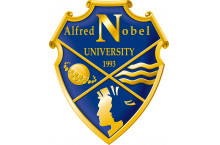
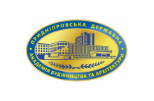

Днепропетровский государственный университет внутренних дел (ДГУВД)
Днепропетровский государственный университет внутренних дел - ведущее учебное заведение Приднепровья, которое осуществляет подготовку специалистов для правоохранительных, правозащитных, судебных органов, системы юстиции, а также юридических служб,
предприятий, учреждений и организаций.
Сегодня университет имеет единую централизованную инфраструктуру в городе Днепр. Обучение происходит в шестиэтажном учебно-лабораторном корпусе. Контроль посещения занятий соискателями высшего образования, а также их безопасность осуществляется с помощью
электронной системы контроля «STOP-Net».
Днепропетровский гуманитарный университет (ДГУ)
Днепропетровский гуманитарный университет создан для подготовки лиц с высшим юридическим и психологическим образованием для организаций, предприятий и учреждений региона. Подготовка специалистов с базовым высшим образованием проводится на дневной
и заочной формах обучения на факультете психологии и на юридическом факультете.
В Днепропетровском гуманитарном университете действуют 8 кафедр, 2 из которых общеуниверситетские и по 3 на каждом факультете. Более 70% научно-педагогического состава имеют ученые степени и ученые звания.
Национальный технический университет "Днепровская политехника" (НТУ "ДП")
В соответствии с приказом Министерства образования и науки Украины № 1636 от 20.12.2017 г. Государственное высшее учебное заведение «Национальный горный университет» переименован в Национальный технический университет «Днепровская политехника».
Политехнический тренд развития университета является следствием расширения спектра специальностей, предлагаемых для получения высшего образования по всем ступеням и предоставляет широкие возможности для осуществления зарубежных стажировок,
получения международных грантов и дипломов университетов-партнеров, а также параллельного обучения по другой специальности с целью получения второго высшего образования. Национальный технический университет «Днепровская политехника» осуществляет
деятельность в соответствии со стандартами европейского научно-образовательного пространства по приоритетному государственному финансированию.
Учебный процесс обеспечивают около тысячи преподавателей, более половины из которых имеют научную степень или ученое звание. Среди них: 25 лауреатов Государственных премий в области науки и техники Украины, каждый шестой - заслуженный деятель
науки и техники, или отличник образования Украины.
Университет таможенного дела и финансов
Университет таможенного дела и финансов - это высшее учебное заведение по подготовке специалистов в области внешнеэкономической деятельности, прежде всего таможенного дела.
Университет имени Альфреда Нобеля

Университет имени Альфреда Нобеля - лидер высшего образования! Бессрочная лицензия Министерства образования и науки Украины от 06.07.2017 р. №144-л
Качественное образование, успех, европейские возможности, стремительный карьерный взлет. Возможность учиться бесплатно и получать стипендию. Университет имени Альфреда Нобеля сертифицирован и аккредитован международными организациями: ZEvA Ганновер,
Германия; European Council for Business Education, Бельгия; International Organization for Standardization ISO 9001: 2015
По заключению британских экспертов: "Университет имени Альфреда Нобеля полностью соответствует требованиям британских стандартов качества и является признанным в Украине университетом-флагманом по обеспечению стандартов качества высшего образования"
...
Украинский государственный химико-технологический университет (УГХТУ)
Украинский государственный химико-технологический университет – это единственное специализированное многопрофильное государственное высшее учебное заведение, в котором с 1930 г. было подготовлено более 50 000 высококвалифицированных специалистов.
Приднепровская государственная академия строительства и архитектуры (ПГАСА)

Приднепровская государственная академия строительства и архитектуры - интегрированное государственное высшее учебное заведение IV уровня аккредитации с развитой инфраструктурой, которое осуществляет образовательную деятельность по всем уровням
подготовки.
Подробная информация разработчика можно найти тут